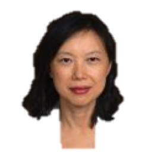

Dong Xu is Curators’ Distinguished Professor in the Department of Electrical Engineering and Computer Science, with appointments in the Christopher S. Bond Life Sciences Center and the Informatics Institute at the University of Missouri-Columbia. He obtained his Ph.D. from the University of Illinois, Urbana-Champaign in 1995 and did two years of postdoctoral work at the US National Cancer Institute. He was a Staff Scientist at Oak Ridge National Laboratory until 2003 before joining the University of Missouri, where he served as Department Chair of Computer Science during 2007-2016. Over the past 30 years, he has conducted research in many areas of computational biology and bioinformatics, including single-cell data analysis, protein structure prediction and modeling, protein post-translational modifications, protein localization prediction, computational systems biology, biological information systems, and bioinformatics applications in human, microbes, and plants. His research since 2012 has focused on the interface between bioinformatics and deep learning. He has published more than 500 papers with more than 28,000 citations and an H-index of 85 according to Google Scholar. He was elected to the rank of American Association for the Advancement of Science (AAAS) Fellow in 2015 and American Institute for Medical and Biological Engineering (AIMBE) Fellow in 2020.